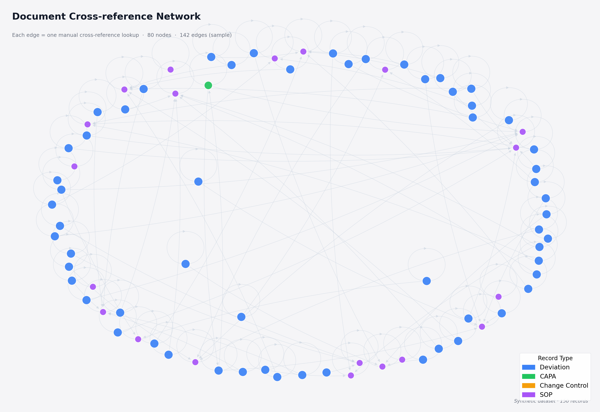
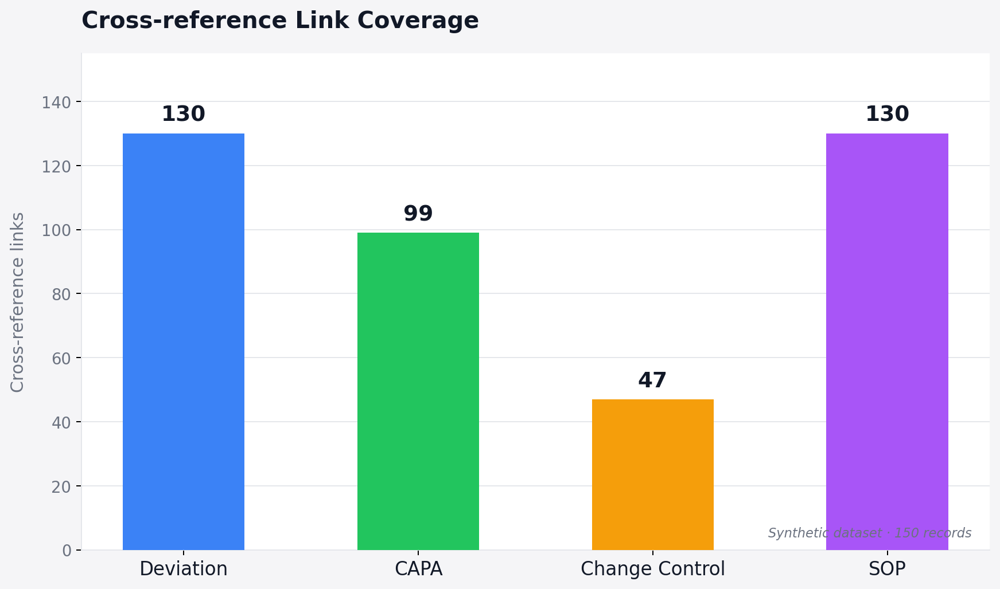
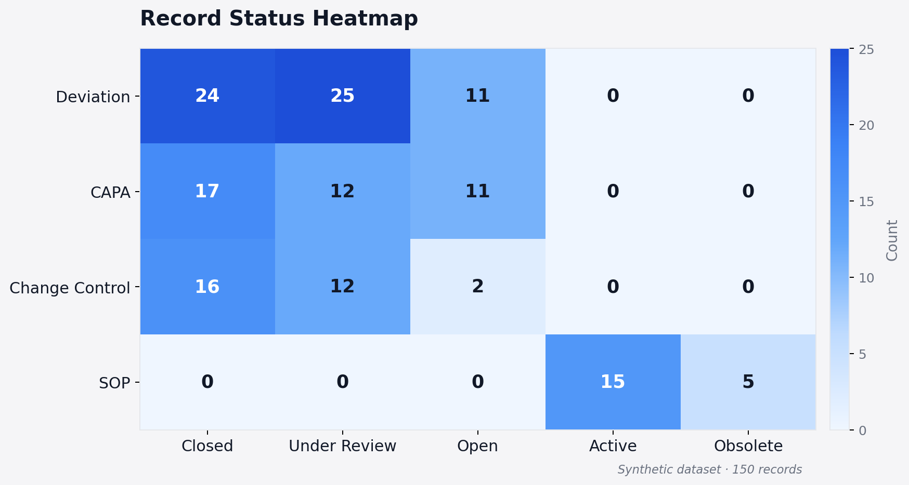

A human-centered traceability project focused on improving document linkage, process visibility, and cognitive clarity across deviation–CAPA–change control workflows in validated GMP systems.
How can document traceability be enhanced and cognitive load reduced without breaching validation requirements or introducing new software systems?
This project extends my HCI work from accessibility and review interaction into traceability infrastructure, showing how humans often become the connective layer in systems that cannot automate linkage directly.
In Good Manufacturing Practice (GMP) environments, every Deviation, CAPA, and Change Control record must be cross-linked to demonstrate process integrity and inspection readiness. These records are often deeply interdependent, but they usually exist as separate validated Word files.
Because these files cannot be freely restructured or automatically linked, analysts and QA reviewers must repeatedly copy and verify identifiers such as deviation IDs, batch numbers, product codes, status labels, and closure dates across multiple records.
What looks like a traceability requirement on paper becomes, in practice, a cognitive burden placed on people.
These were not individual user mistakes. They were consequences of system design under validation constraints, where automation was limited and humans became the connectors of information across fragmented records.
Each cross-reference check that should be automatic instead becomes a cognitive task — one that accumulates across hundreds of linked records in a real GMP environment.
How can document traceability be enhanced and cognitive load reduced without breaching validation requirements or introducing new software systems?
Generated a synthetic GMP documentation network of 150 records (60 Deviations, 40 CAPAs, 30 Change Controls, 20 SOPs) using Python, replicating the structural properties of real regulated documentation — including partial linkage, version drift, and lifecycle inconsistency.
Extracted key identifier fields — Deviation ID, CAPA ID, batch number, product code, status, closure date, SOP version — and constructed a structured linkage matrix. Added status-based filters and category-level keyword indexing to support rapid pattern detection.
Used Python (pandas, networkx) to automate cross-link verification, detect missing connections, identify outdated SOP references, and surface lifecycle mismatches — producing quantified evidence of structural traceability fragmentation.
Modeled the documentation network as a directed graph, where nodes represent individual records and edges represent cross-reference relationships. Visualized how records cluster, where traceability chains break, and how cognitive load distributes across the network.
Built a Traceability Explorer prototype that renders the full documentation chain for any selected record — surfacing linkage gaps, version conflicts, and lifecycle mismatches in one place, without modifying any validated source file.
The analysis was conducted on a synthetic dataset of 150 GMP records. The dataset was designed to reflect structural patterns observed in real validation-constrained documentation environments — not to represent a specific organization, but to make the traceability problem computationally tractable and visually demonstrable.

Each node is a GMP record. Each directed edge is a cross-reference link — the kind of connection that a reviewer must manually trace across separate validated files in a real environment. The graph reveals several things that are invisible in normal document workflows:

Deviation and SOP records have the highest number of cross-reference connections (130 each), while Change Control coverage is notably lower (47). This gap means that the downstream consequences of a deviation — process changes — are often the least traceable part of the chain.

Deviations show a high concentration of both Closed and Under Review statuses simultaneously — a lifecycle pattern that creates ambiguity during audit reconstruction. When the status of a record is unclear or inconsistent with its linked documents, reviewers must resolve the discrepancy manually.
Real GMP records contain proprietary product identifiers, batch numbers, and investigation details that cannot be disclosed. The synthetic dataset was constructed to preserve the structural properties of real documentation networks — partial linkage, version drift, lifecycle inconsistency — without exposing any organizational data. The research argument does not depend on specific record content; it depends on the network-level patterns that the data makes visible.
The Traceability Explorer renders the full documentation chain for any selected record — Deviation → CAPA → Change Control → SOP — in a single view, surfacing linkage gaps, version conflicts, and lifecycle mismatches without modifying any validated source file.
Without computational analysis, the traceability problem can only be described anecdotally. The network graph makes the cognitive burden visible — each edge is a manual lookup, each disconnected node is a gap that only a person can fill. The analysis transforms a qualitative observation into a structural, measurable claim.
This project's primary contribution is conceptual and computational, not interactional. The central claim — that traceability is a cognitive problem, not just a technical one — is demonstrated through the network analysis, not through measuring how fast users complete tasks.
Conducting a valid usability study would also require participants with active GMP experience working on real or realistic documentation — a context where NDA constraints and data sensitivity make formal testing difficult to conduct appropriately.
The Traceability Explorer functions as a demonstrator — a working artifact that makes the research argument tangible. Rather than proving that the tool is faster to use, it shows what becomes visible when the hidden documentation chain is surfaced in one place.
| Area | Before | With support layer | Interpretation |
|---|---|---|---|
| Document traceability | Manual search across separate files | Full chain visible in one place | Cognitive linking work is redistributed to the system |
| Missing link detection | Only visible under audit pressure | Surfaced computationally | Gaps become findable before they become problems |
| Version consistency | Checked manually per record | Flagged automatically | Version drift no longer depends on reviewer memory |
| Lifecycle mismatches | Invisible until inspection | Detected at record level | Status inconsistencies can be addressed proactively |
| Compliance risk | None | None | Prototype remains external to validated documentation |
The gain here is not just efficiency. It is a redistribution of cognitive work: users no longer have to serve as the only linking mechanism across fragmented documentation. In the network graph, every edge is a task that currently sits with a person. A visibility layer does not eliminate that work — but it makes it legible, surfaceable, and therefore manageable.
This project is being developed into a paper on traceability, metadata infrastructure, and cognitive load in compliance-constrained documentation systems. The paper extends the cross-reference intervention into a broader HCI argument about how validation constraints shift linking work onto users — and how lightweight external support layers can make that work more visible without breaching system integrity.
In paper form, the project contributes to research on regulated knowledge systems by demonstrating that traceability is not only a technical requirement but also an interaction and cognition problem shaped by documentation architecture.
This project demonstrated that compliance and usability are not mutually exclusive. Even within the constraints of validated documentation, human-centered design can restore clarity, efficiency, and cognitive equity.
The network graph is the most honest representation of what daily traceability work looks like in a GMP environment. Each edge is a manual check. Each disconnected node is a gap that a person must hold in memory. What this project asks — and begins to answer — is whether the cognitive burden of that work has to remain invisible.
Developed a metadata-driven cross-reference system and document network analysis that made traceability fragmentation visible and computationally measurable in validated GMP documentation — and is now being extended into a paper on traceability as a cognitive and interaction problem in regulated systems.